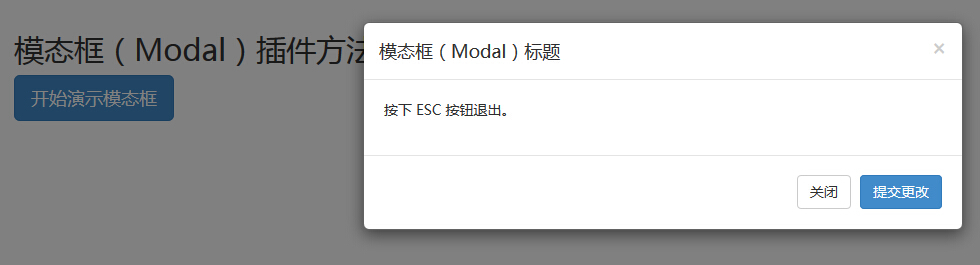
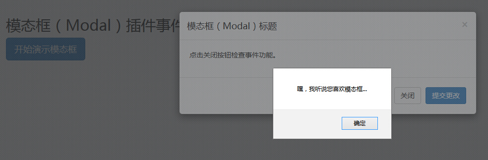

Bootstrap 模态框（Modal）插件
模态框（Modal）是覆盖在父窗体上的子窗体。通常，目的是显示来自一个单独的源的内容，可以在不离开父窗体的情况下有一些互动。子窗体可提供信息、交互等。
如果您想要单独引用该插件的功能，那么您需要引用 modal.js。或者，正如 Bootstrap 插件概览 一章中所提到，您可以引用 bootstrap.js 或压缩版的 bootstrap.min.js。
用法
您可以切换模态框（Modal）插件的隐藏内容：
- 通过 data 属性：在控制器元素（比如按钮或者链接）上设置属性 data-toggle="modal"，同时设置 data-target="#identifier" 或 href="#identifier" 来指定要切换的特定的模态框（带有 id="identifier"）。
- 通过 JavaScript：使用这种技术，您可以通过简单的一行 JavaScript 来调用带有 id="identifier" 的模态框：
$('#identifier').modal(options)
实例
一个静态的模态窗口实例，如下面的实例所示：
<!DOCTYPE html> <html> <head> <title>Bootstrap 实例 - 模态框（Modal）插件</title> <link href="/bootstrap/css/bootstrap.min.css" rel="stylesheet"> <script src="/scripts/jquery.min.js"></script> <script src="/bootstrap/js/bootstrap.min.js"></script> </head> <body> <h2>创建模态框（Modal）</h2> <!-- 按钮触发模态框 --> <button class="btn btn-primary btn-lg" data-toggle="modal" data-target="#myModal"> 开始演示模态框 </button> <!-- 模态框（Modal） --> <div class="modal fade" id="myModal" tabindex="-1" role="dialog" aria-labelledby="myModalLabel" aria-hidden="true"> <div class="modal-dialog"> <div class="modal-content"> <div class="modal-header"> <button type="button" class="close" data-dismiss="modal" aria-hidden="true"> × </button> <h4 class="modal-title" id="myModalLabel"> 模态框（Modal）标题 </h4> </div> <div class="modal-body"> 在这里添加一些文本 </div> <div class="modal-footer"> <button type="button" class="btn btn-default" data-dismiss="modal">关闭 </button> <button type="button" class="btn btn-primary"> 提交更改 </button> </div> </div><!-- /.modal-content --> </div><!-- /.modal --> </div> </body> </html>
结果如下所示：

- 使用模态窗口，您需要有某种触发器。您可以使用按钮或链接。这里我们使用的是按钮。
- 如果您仔细查看上面的代码，您会发现在 <button> 标签中，data-target="#myModal" 是您想要在页面上加载的模态框的目标。您可以在页面上创建多个模态框，然后为每个模态框创建不同的触发器。现在，很明显，您不能在同一时间加载多个模块，但您可以在页面上创建多个在不同时间进行加载。
- 在模态框中需要注意两点：
- 第一是 .modal，用来把 <div> 的内容识别为模态框。
- 第二是 .fade class。当模态框被切换时，它会引起内容淡入淡出。
- aria-labelledby="myModalLabel"，该属性引用模态框的标题。
- 属性 aria-hidden="true" 用于保持模态窗口不可见，直到触发器被触发为止（比如点击在相关的按钮上）。
- <div class="modal-header">，modal-header 是为模态窗口的头部定义样式的类。
- class="close"，close 是一个 CSS class，用于为模态窗口的关闭按钮设置样式。
- data-dismiss="modal"，是一个自定义的 HTML5 data 属性。在这里它被用于关闭模态窗口。
- class="modal-body"，是 Bootstrap CSS 的一个 CSS class，用于为模态窗口的主体设置样式。
- class="modal-footer"，是 Bootstrap CSS 的一个 CSS class，用于为模态窗口的底部设置样式。
- data-toggle="modal"，HTML5 自定义的 data 属性 data-toggle 用于打开模态窗口。
选项
有一些选项可以用来定制模态窗口（Modal Window）的外观和感观，它们是通过 data 属性或 JavaScript 来传递的。下表列出了这些选项：
| 选项名称 | 类型/默认值 | Data 属性名称 | 描述 |
|---|---|---|---|
| backdrop | boolean 或 string 'static' 默认值：true | data-backdrop | 指定一个静态的背景，当用户点击模态框外部时不会关闭模态框。 |
| keyboard | boolean 默认值：true | data-keyboard | 当按下 escape 键时关闭模态框，设置为 false 时则按键无效。 |
| show | boolean 默认值：true | data-show | 当初始化时显示模态框。 |
| remote | path 默认值：false | data-remote | 使用 jQuery .load 方法，为模态框的主体注入内容。如果添加了一个带有有效 URL 的 href，则会加载其中的内容。如下面的实例所示：
<a data-toggle="modal" href="remote.html" data-target="#modal">请点击我</a> |
方法
下面是一些可与 modal() 一起使用的有用的方法。
| 方法 | 描述 | 实例 |
|---|---|---|
| Options: .modal(options) | 把内容作为模态框激活。接受一个可选的选项对象。 |
$('#identifier').modal({ keyboard: false }) |
| Toggle: .modal('toggle') | 手动切换模态框。 |
$('#identifier').modal('toggle') |
| Show: .modal('show') | 手动打开模态框。 |
$('#identifier').modal('show') |
| Hide: .modal('hide') | 手动隐藏模态框。 |
$('#identifier').modal('hide') |
实例
下面的实例演示了方法的用法：
<!DOCTYPE html> <html> <head> <title>Bootstrap 实例 - 模态框（Modal）插件方法</title> <link href="/bootstrap/css/bootstrap.min.css" rel="stylesheet"> <script src="/scripts/jquery.min.js"></script> <script src="/bootstrap/js/bootstrap.min.js"></script> </head> <body> <h2>模态框（Modal）插件方法</h2> <!-- 按钮触发模态框 --> <button class="btn btn-primary btn-lg" data-toggle="modal" data-target="#myModal"> 开始演示模态框 </button> <!-- 模态框（Modal） --> <div class="modal fade" id="myModal" tabindex="-1" role="dialog" aria-labelledby="myModalLabel" aria-hidden="true"> <div class="modal-dialog"> <div class="modal-content"> <div class="modal-header"> <button type="button" class="close" data-dismiss="modal" aria-hidden="true">× </button> <h4 class="modal-title" id="myModalLabel"> 模态框（Modal）标题 </h4> </div> <div class="modal-body"> 按下 ESC 按钮退出。 </div> <div class="modal-footer"> <button type="button" class="btn btn-default" data-dismiss="modal">关闭 </button> <button type="button" class="btn btn-primary"> 提交更改 </button> </div> </div><!-- /.modal-content --> </div><!-- /.modal-dialog --> </div><!-- /.modal --> <script> $(function () { $('#myModal').modal({ keyboard: true })}); </script> </body> </html>
结果如下所示：

只需要点击 ESC 键，模态窗口即会退出。
事件
下表列出了模态框中要用到事件。这些事件可在函数中当钩子使用。
| 事件 | 描述 | 实例 |
|---|---|---|
| show.bs.modal | 在调用 show 方法后触发。 |
$('#identifier').on('show.bs.modal', function () { // 执行一些动作... }) |
| shown.bs.modal | 当模态框对用户可见时触发（将等待 CSS 过渡效果完成）。 |
$('#identifier').on('shown.bs.modal', function () { // 执行一些动作... }) |
| hide.bs.modal | 当调用 hide 实例方法时触发。 |
$('#identifier').on('hide.bs.modal', function () { // 执行一些动作... }) |
| hidden.bs.modal | 当模态框完全对用户隐藏时触发。 |
$('#identifier').on('hidden.bs.modal', function () { // 执行一些动作... }) |
实例
下面的实例演示了事件的用法：
<!DOCTYPE html> <html> <head> <title>Bootstrap 实例 - 模态框（Modal）插件事件</title> <link href="/bootstrap/css/bootstrap.min.css" rel="stylesheet"> <script src="/scripts/jquery.min.js"></script> <script src="/bootstrap/js/bootstrap.min.js"></script> </head> <body> <h2>模态框（Modal）插件事件</h2> <!-- 按钮触发模态框 --> <button class="btn btn-primary btn-lg" data-toggle="modal" data-target="#myModal"> 开始演示模态框 </button> <!-- 模态框（Modal） --> <div class="modal fade" id="myModal" tabindex="-1" role="dialog" aria-labelledby="myModalLabel" aria-hidden="true"> <div class="modal-dialog"> <div class="modal-content"> <div class="modal-header"> <button type="button" class="close" data-dismiss="modal" aria-hidden="true">× </button> <h4 class="modal-title" id="myModalLabel"> 模态框（Modal）标题 </h4> </div> <div class="modal-body"> 点击关闭按钮检查事件功能。 </div> <div class="modal-footer"> <button type="button" class="btn btn-default" data-dismiss="modal"> 关闭 </button> <button type="button" class="btn btn-primary"> 提交更改 </button> </div> </div><!-- /.modal-content --> </div><!-- /.modal-dialog --> </div><!-- /.modal --> <script> $(function () { $('#myModal').modal('hide')})}); </script> <script> $(function () { $('#myModal').on('hide.bs.modal', function () { alert('嘿，我听说您喜欢模态框...');}) }); </script> </body> </html>
结果如下所示：

正如上面实例所示，如果您点击了 关闭 按钮，即 hide 事件，则会显示一个警告消息。